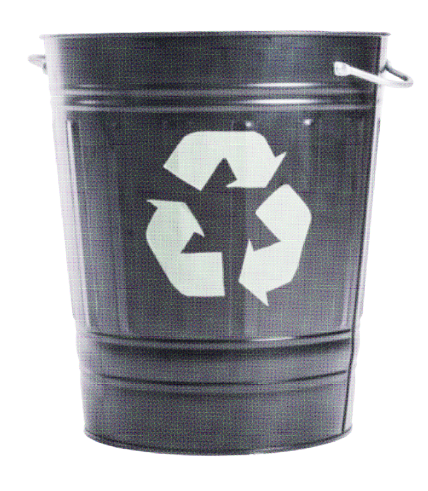
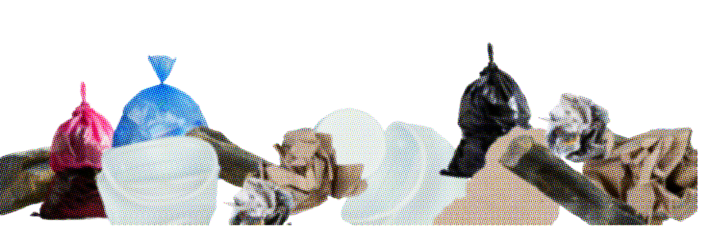
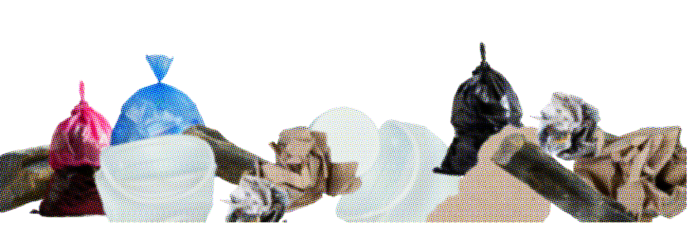

환경부령이 정하는 사업장폐기물배출자는 사업장폐기물의 종류, 발생량 등을 환경부령이 정하는 바에 따라 시장 군수 구청장에게 신고하도록 하여 일반사업장폐기물에 대한 신고제도를 확립하고 있으며, 지정폐기물의 처리증명제를 통하여, 배출자, 운반자, 처리자가 배출로부터 처리 및 정산의 단계별로 적법처리를 입증하도록 의무화하였다. 지정폐기물의 처리증명제는 지정폐기물의 불법투기와 불법처리를 예방하기 위하여 지정폐기물의 배출단계부터 최종처리단계까지를 총괄하는 지정폐기물의 처리경로 및 적법처리 여부를 추적·감시하는 제도로서, 지정폐기물의 처리경로뿐만 아니라 적법처리 여부도 추적 감시한다는 점에서 종래의 폐기물추적제도보다 강화된 제도로 볼 수 있다.
(출처: 행정안전부 국가기록원)
정부는 폐기물 관리의 근본적 개선을 위해 '자원순환 정책 대전환' 계획을 수립했다. 폐기물 감량, 재활용 강화, 공공관리 체계 구축, 처리시설 개선 등을 주목할 점으로 꼽을 수 있다. 생산 및 유통 단계에서 발생하는 불필요한 폐기물을 예방하고 경제 섲앙, 폐기물 증가의 탈동조화를 추구한다. 특히 택배 포장재 등 유통포장재의 감축 정책이 중점적으로 논의되었다.

지자체의 노력
Score: 0

디자인은 끝이 아니라
새로운 순환의 시작이며,
아름다움은 지속 가능성과
책임에서 나옵니다.


 
